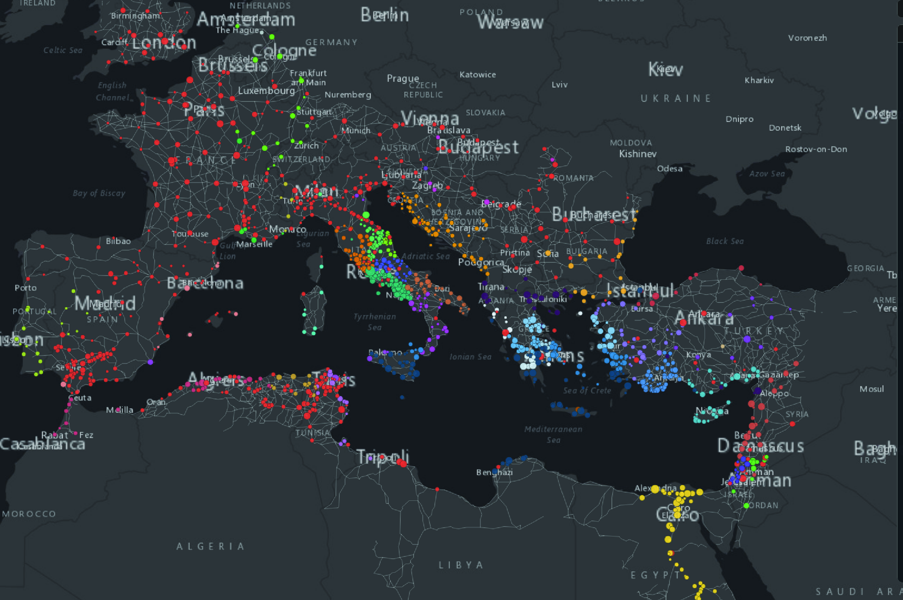

Do all the roads lead to Rome?
Did the Romans found their empire's cities — or alter those founded by others? Behind most "Roman" cities stands someone far older: Greek tribes, Etruscans, Phoenicians, and other tribal unions erased from the label. The majority of settlements founded during the Roman Empire are scattered along the imperial periphery and in the most oppositional provinces — North Africa, Gaul, Iberia, Northern Italy, along the Rhine and Danube. Nevertheless, we can observe that Rome didn't found the ancient world, thus many towns in the central provinces were established long before the imperial age. It acquired them — and took the credit of some of them.
For sure, Roman urban planners (almost always military officials) were professional in selecting sites for new settlements, but were cities so brilliantly composed as to be able to survive until modernity? [find who — scientist] praises Roman urban planning as visionary. But is that design genius — or proof that once a city takes root in the right spot, it never lets go? London, Paris, Milan, Istanbul: are these Roman successes, or ancient decisions we're still trapped in?
Did all roads lead to Rome — or is that the biggest propaganda win in history? Rome tops the network. But the real traffic flowed through the corridors — Byzantium, Sirmium, Ravenna — cities most people have never heard of. The capitals at the ends of the roads carried almost nothing through them. So: one master city… or a web of hubs Rome simply claimed as its own?

Click the image above to open the application in full screen.
(You will be redirected automatically in 30 seconds)